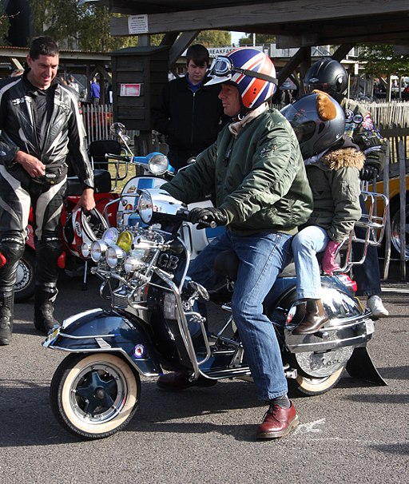

Photo of a small frame Vespa 90, by hongsta. License: CC BY-SA 4.0, from Wikimedia Commons
In this example, you will see that mousing over an image replaces the image with a color block containing text, and mousing off that block causes the image to reappear. This effect is accomplished by a combination of JavaScript (in the file js/main.js), ID attributes (in this file, javascript_example.html) and CSS (in the file css/main.css). Both the JavaScript and the CSS use the specific ID attributes for each IMG and each DIV in the HTML file.
Photo of a man on a Vespa, by Brian Snelson (originally posted to Flickr as Vespa). License: CC BY 2.0, via Wikimedia Commons